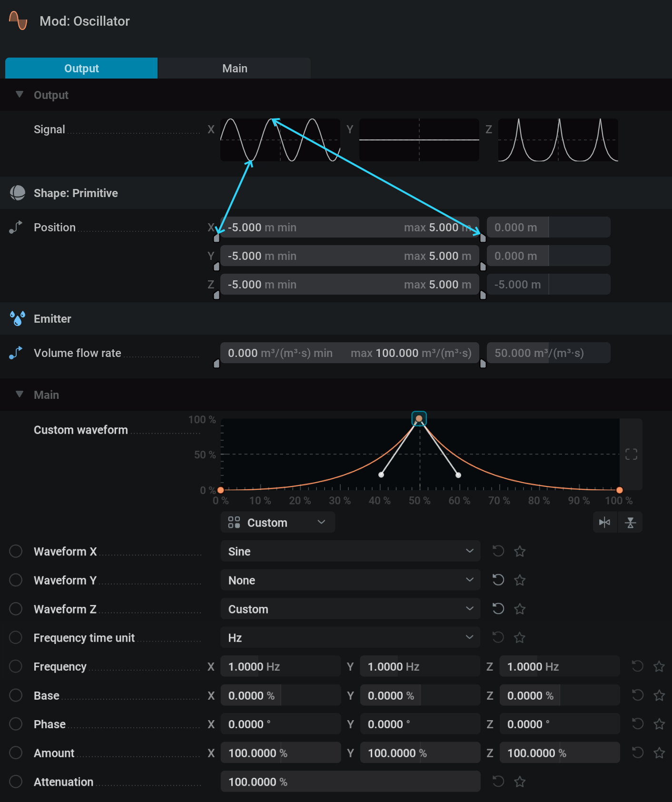
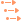
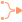

Modulating Parameters#
Most parameters in Embergen can be controlled by an external modulation node.
How to modulate a parameter#
Let’s say we want a sphere to continuously move up and down. This can be done by hand using keyframes, but you can also use an Mod: Oscillator node.
{kind=link}

Set the override state for the Position parameter to Pin Override by
 clicking on the icon next to it.
clicking on the icon next to it.Connect an Mod: Oscillator node to the now exposed pin on the left side.
Set Waveform X and Y to None so only the Z-position will oscillate.
Adjust the settings in the oscillator node to your liking.
Node Details#
Let’s have a look at the Node Details for the Oscillator.

Output#
Signal: Visual representation of the created waveform.
Below the Signal display is a list of all parameters that are connected to the Mod: Oscillator node.
The parameters are represented with range sliders for each component.
Here, Volume flow rate only has one component and therefore has only one range slider and will be controlled by the Waveform X only.
These range sliders can be used to control the way in which the parameter values are mapped to the waveform. The min value in the range slider is the lowest possible value for the parameter and the max value the highest.
For example, when using a default sine wave the parameter value will oscillate smoothly up and down within the value range set by the range slider. Here, the Position parameters can oscillate between -50 and 50 meters and the Fuel rate can oscillate between a rate of 0 and 1500 percent per second.
For more information on how to use range sliders, please check out our Range Slider page!
Main#
Custom Waveform: This graph is only visible when selecting Custom in one of the Wavefrom dropdown menus. This option allows for creating any waveform you can think of. The Curve Generator… in the
 right-click-menu can be very useful to make things like a jittered sine wave. For more information on how to use modulation curves please check out our Modulation Curve page!
right-click-menu can be very useful to make things like a jittered sine wave. For more information on how to use modulation curves please check out our Modulation Curve page!
Waveform X,Y,Z: This dropdown menu holds the different types of waveforms which will determine the pattern in which the values oscillate.
Base: Offset the values. Adding or subtracting.
Frequency: Number of times per second the pattern is repeated. Higher values will make the values change faster.
Phase: Temporal offset of the waveform.
Amount: Intensity of the waveform. Higher values will have the oscillated values deviate further from the base.
Attenuation: Intensity multiplier for all the waveforms.
Other Modulators#
All the modulator nodes work with three values to represent the X, Y and Z axis.
When modulating a parameter with a single value the X, A or 1 output is used only.
When modulating a color parameter X, Y and Z will represent Red, Green and Blue

Constant#
{kind=link}
Generates a signal with values that don’t change over time.
This can be useful for when you want to control multiple parameters with the same slider.
This modulator is unique as it has the Mode dropdown parameter to select the most suitable type of control.
Oscillator#
Generates a signal where the values change over a specified waveform.
This can be useful to add some turbulence into your project by having parameters deviate from their base value in a ,for example, random way.
 Cycle#
Cycle#
A version of the saw waveform. Repeats a linear value change from -360 to 360.
This is used to get something continuously rotating.

Combine#
{kind=link}
This node doesn’t generate a signal, but combines multiple signals in a specified mathematical way.
 Math#
Math#
This node has a text field where you can write you own math expressions to generate a signal.
Time Shift#
{kind=link}
Doesn’t generate a signal, but does a temporal offset on the incoming signal.
ADSR#
{kind=link}
The ADSR Node allows you to map a specific parameter to an ADSR Envelope.
ADSR stands for Attack, Decay, Sustain, Release. Once the ADSR node Active checkbox is on, the envelope will be engaged, starting with the ‘attack’. Attack is the amount of time it takes for the base value of the assigned parameter to reach its peak value, dictated by the Amount %. Decay is the duration of time it takes to get from the peak value to the Sustain value. Sustain is the percentage inbetween the Base and Amount value, and this value will remain the same until the ADSR node is innactive. Once the Active binary is turned off, you will ‘release’ the envelope. Release is the time it takes for the Sustain value to return to the Base value.
This node is especcially useful in combination with the MIDI node.
MIDI#
{kind=link}
Generates a signal based on pressing buttons on a MIDI controller like a keyboard.
To use this you first need to check Settings/Preferences/General/Enable MIDI support